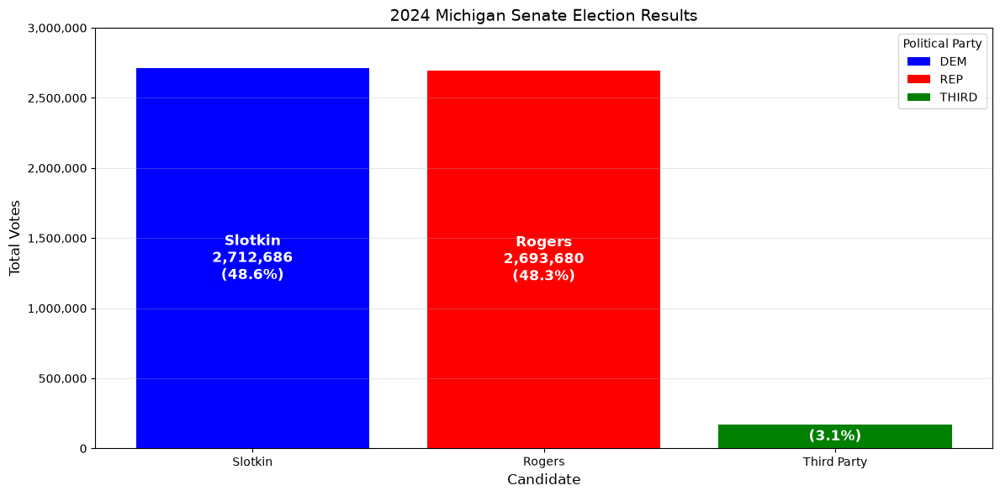
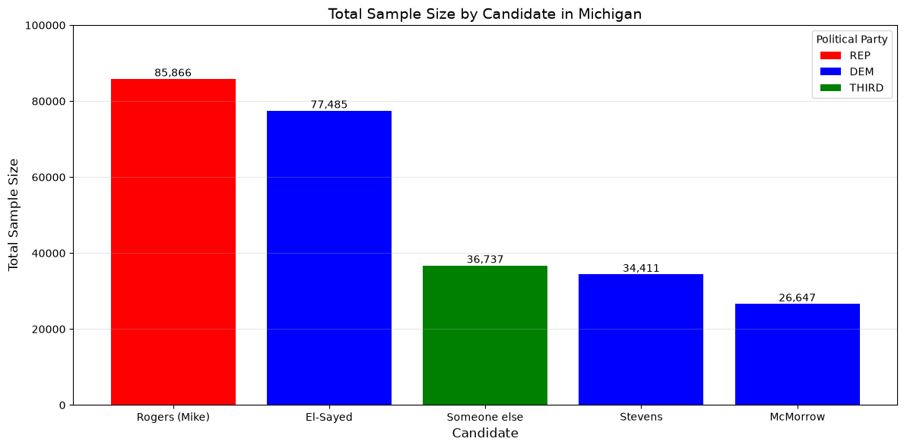
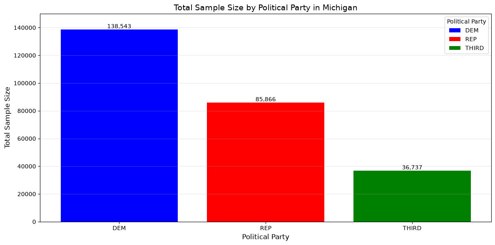
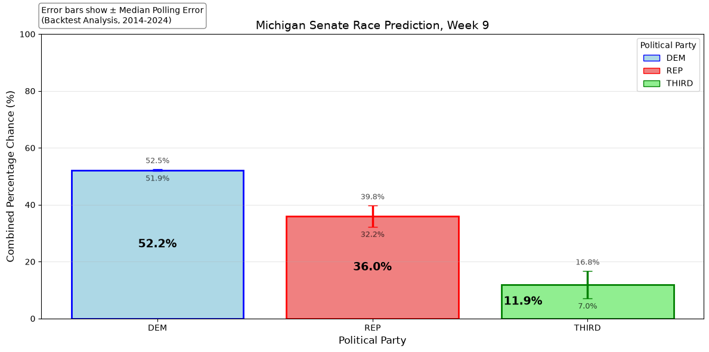

Michigan Election Analysis#
Import Libraries#
from matplotlib.patches import Patch
import pandas as pd
import matplotlib.pyplot as plt
import statistics
data = pd.read_csv("senate.csv")
results_data = pd.read_csv("michigan_results_index.csv")
backtest_data_2024 = pd.read_csv("michigan_2024_polling_backtest.csv")
backtest_data_2020 = pd.read_csv("michigan_2020_polling_backtest.csv")
backtest_data_2018 = pd.read_csv("michigan_2018_polling_backtest.csv")
backtest_data_2014 = pd.read_csv("michigan_2014_polling_backtest.csv")
Historical data results from the 2024 Michigan Senate Race: Democrat, Republican, and Third Party#
# ---------------------------------------------------------------
# 1. RAW DATA
# ---------------------------------------------------------------
# Votes from the 2024 Michigan Senate election. These are the official results
# from the Michigan Secretary of State.
votes = {
"Slotkin": {"party": "DEM", "votes": 2712686},
"Rogers": {"party": "REP", "votes": 2693680},
"Third Party": {"party": "NONE", "votes": 170821},
}
# Generate the total votes for percentage calculations.
total_votes = sum(c["votes"] for c in votes.values())
# ---------------------------------------------------------------
# 2. DATAFRAME
# ---------------------------------------------------------------
# Create a DataFrame from the raw data, calculating the percentage of votes for
# each candidate.
data_2024 = pd.DataFrame([
{
"Candidate": name,
"Party": info["party"],
"Votes": info["votes"],
"Percent": info["votes"] / total_votes * 100,
}
for name, info in votes.items()
])
# Sort highest-to-lowest so the chart reads left-to-right by size.
data_2024 = data_2024.sort_values("Votes", ascending=False).reset_index(drop=True)
# Drop candidates who received no votes — nothing to draw.
data_2024 = data_2024[data_2024["Votes"] > 0].reset_index(drop=True)
print(data_2024)
# ---------------------------------------------------------------
# 3. DISPLAY SETTINGS
# ---------------------------------------------------------------
# One place to control how each party looks. "label" is what the
# legend and chart show; "color" is the bar fill.
PARTY_STYLE = {
"DEM": {"color": "blue", "label": "DEM"},
"REP": {"color": "red", "label": "REP"},
"NONE": {"color": "green", "label": "THIRD"},
}
def style_for(party):
"""Return color + label for a party, defaulting to gray/unknown."""
return PARTY_STYLE.get(party, {"color": "gray", "label": party})
# ---------------------------------------------------------------
# 4. DRAW THE BARS
# ---------------------------------------------------------------
fig, ax = plt.subplots(figsize=(12, 6))
# x-positions are 0, 1, 2 — computed once so bars and labels
# can never drift out of sync.
x_positions = range(len(data_2024))
for x, row in zip(x_positions, data_2024.itertuples()):
ax.bar(x, row.Votes, color=style_for(row.Party)["color"])
# ---------------------------------------------------------------
# 5. LABEL THE BARS
# ---------------------------------------------------------------
for x, row in zip(x_positions, data_2024.itertuples()):
votes_fmt = f"{row.Votes:,}"
pct_fmt = f"({row.Percent:.1f}%)"
# Small bars get only the percentage; big bars get name + votes + %.
if row.Party == "NONE":
text = pct_fmt
else:
text = f"{row.Candidate}\n{votes_fmt}\n{pct_fmt}"
ax.text(x, row.Votes / 2, text,
ha="center", va="center",
fontsize=12, fontweight="bold", color="white")
# ---------------------------------------------------------------
# 6. AXES, TITLE, LEGEND
# ---------------------------------------------------------------
# Tell matplotlib the tick labels are the candidate names.
ax.set_xticks(list(x_positions))
ax.set_xticklabels(data_2024["Candidate"])
ax.set_xlabel("Candidate", fontsize=12)
ax.set_ylabel("Total Votes", fontsize=12)
ax.set_title("2024 Michigan Senate Election Results", fontsize=14)
# Comma formatting on the y-axis, e.g. 1,500,000
ax.yaxis.set_major_formatter(plt.FuncFormatter(lambda v, _: f"{int(v):,}"))
ax.grid(axis="y", alpha=0.3)
ax.set_ylim(0, 3_000_000)
# Legend: one swatch per party, using the same style table.
# dict.fromkeys(...) removes duplicates while keeping order.
legend_elements = [
Patch(facecolor=style_for(p)["color"], label=style_for(p)["label"])
for p in dict.fromkeys(data_2024["Party"])
]
ax.legend(handles=legend_elements, title="Political Party", loc="upper right")
plt.tight_layout()
plt.show()
Candidate Party Votes Percent
0 Slotkin DEM 2712686 48.638964
1 Rogers REP 2693680 48.298183
2 Third Party NONE 170821 3.062852

Data Results of Current Week’s Polls, by Candidate#
# =====================================================================
# STAGE 1 — LOAD AND CLEAN THE CSV DATA
# =====================================================================
# Rename columns to friendlier labels (Title Case, readable in output).
data = data.rename(columns={
"state": "State",
"sample_size": "Sample Size",
"party": "Political Party",
"answer": "Answer",
})
# Keep only Michigan rows with a recognized party.
MICHIGAN = "MI"
KEEP_PARTIES = ["DEM", "REP", "NONE"]
data = data[
(data["State"] == MICHIGAN)
& (data["Political Party"].isin(KEEP_PARTIES))
]
# Drop "non-answers" — these aren't real candidates.
NON_ANSWERS = ["Don't know", "Refused", "No opinion"]
data = data[~data["Answer"].isin(NON_ANSWERS)]
# Remove exact duplicate rows.
data = data.drop_duplicates()
# =====================================================================
# STAGE 2 — AGGREGATE: top 5 candidates by total sample size
# =====================================================================
df_top5 = (
data
.groupby(["Answer", "Political Party"])["Sample Size"]
.sum()
.reset_index()
.sort_values("Sample Size", ascending=False)
.head(5)
.reset_index(drop=True) # clean 0-based index for plotting
)
print(df_top5)
# Rename the two columns the plot needs, so row["Votes"] / row["Party"]
# reads naturally in the drawing loops below.
df_top5 = df_top5.rename(columns={
"Political Party": "Party",
"Sample Size": "Votes",
})
# =====================================================================
# STAGE 3 — DISPLAY SETTINGS (one place for names and colors)
# =====================================================================
PARTY_STYLE = {
"DEM": {"color": "blue", "label": "DEM"},
"REP": {"color": "red", "label": "REP"},
"NONE": {"color": "green", "label": "THIRD"},
}
def style_for(party):
"""Return the color and label for a party, defaulting to gray."""
return PARTY_STYLE.get(party, {"color": "gray", "label": party})
# =====================================================================
# STAGE 4 — DRAW THE BAR CHART
# =====================================================================
fig, ax = plt.subplots(figsize=(12, 6))
# Positions 0, 1, 2, ... shared by bars and labels so they never drift.
x_positions = range(len(df_top5))
# Bars: one per row, colored by party
for x in x_positions:
row = df_top5.iloc[x]
ax.bar(x, row["Votes"], color=style_for(row["Party"])["color"])
# Value labels: placed just above each bar
for x in x_positions:
row = df_top5.iloc[x]
ax.text(x, row["Votes"], f"{int(row['Votes']):,}",
ha="center", va="bottom", fontsize=10)
# Axes, title, grid
ax.set_xticks(list(x_positions))
ax.set_xticklabels(df_top5["Answer"], rotation=0)
ax.set_xlabel("Candidate", fontsize=12)
ax.set_ylabel("Total Sample Size", fontsize=12)
ax.set_title("Total Sample Size by Candidate in Michigan", fontsize=14)
ax.set_ylim(0, 100_000)
ax.grid(axis="y", alpha=0.3)
# Legend: one swatch per party, generated from PARTY_STYLE
legend_elements = [
Patch(facecolor=style_for(p)["color"], label=style_for(p)["label"])
for p in dict.fromkeys(df_top5["Party"])
]
ax.legend(handles=legend_elements, title="Political Party", loc="upper right")
plt.tight_layout()
plt.show()
Answer Political Party Sample Size
0 Rogers (Mike) REP 85866.0
1 El-Sayed DEM 77485.0
2 Someone else NONE 36737.0
3 Stevens DEM 34411.0
4 McMorrow DEM 26647.0

Data Results of Week’s Polls, by Political Party#
# =====================================================================
# STAGE 1 — AGGREGATE: total sample size per party
# =====================================================================
# df_aggregated holds the top-5 candidates, one row per (candidate, party).
# Summing "Sample Size" grouped by party combines those candidates into
# one total per political party.
# Previous block — keep original column names in df_aggregated
df_aggregated = (
data
.groupby(["Answer", "Political Party"])["Sample Size"]
.sum()
.reset_index()
.sort_values("Sample Size", ascending=False)
.head(5)
.reset_index(drop=True)
)
party_totals = (
df_aggregated
.groupby("Political Party")["Sample Size"]
.sum()
.reset_index()
.sort_values("Sample Size", ascending=False)
.reset_index(drop=True)
)
# Friendly names for the plotting loops.
party_totals = party_totals.rename(columns={
"Political Party": "Party",
"Sample Size": "Votes",
})
print(party_totals)
# =====================================================================
# STAGE 2 — DISPLAY SETTINGS (one place for names and colors)
# =====================================================================
PARTY_STYLE = {
"DEM": {"color": "blue", "label": "DEM"},
"REP": {"color": "red", "label": "REP"},
"NONE": {"color": "green", "label": "THIRD"},
}
def style_for(party):
"""Return the color and label for a party, defaulting to gray."""
return PARTY_STYLE.get(party, {"color": "gray", "label": party})
# =====================================================================
# STAGE 3 — DRAW THE BAR CHART
# =====================================================================
fig, ax = plt.subplots(figsize=(12, 6))
# Positions 0, 1, 2 shared by bars and labels so they never drift.
x_positions = range(len(party_totals))
# Bars: one per party, colored by party
for x in x_positions:
row = party_totals.iloc[x]
ax.bar(x, row["Votes"], color=style_for(row["Party"])["color"])
# Value labels: placed just above each bar
for x in x_positions:
row = party_totals.iloc[x]
votes = row["Votes"]
ax.text(x, votes, f"{int(votes):,}", ha="center", va="bottom", fontsize=10)
# Axes, title, grid
# The x-axis shows the *display name* of each party ("Third Party" not "NONE").
ax.set_xticks(list(x_positions))
ax.set_xticklabels(
[style_for(p)["label"] for p in party_totals["Party"]],
rotation=0,
)
ax.set_xlabel("Political Party", fontsize=12)
ax.set_ylabel("Total Sample Size", fontsize=12)
ax.set_title("Total Sample Size by Political Party in Michigan", fontsize=14)
ax.set_ylim(0, 150_000)
ax.grid(axis="y", alpha=0.3)
# Legend: one swatch per party, generated from PARTY_STYLE
legend_elements = [
Patch(facecolor=style_for(p)["color"], label=style_for(p)["label"])
for p in party_totals["Party"]
]
ax.legend(handles=legend_elements, title="Political Party", loc="upper right")
plt.tight_layout()
plt.show()
Party Votes
0 DEM 138543.0
1 REP 85866.0
2 NONE 36737.0

Calculating median error rate from backtest analysis#
# =====================================================================
# STAGE 1 — RAW BACKTEST VALUES (row/column lookups made explicit)
# =====================================================================
# Each election year maps to the row that holds that party's
# median polling error in that year's backtest table.
# The column is index 1 (the second column) in every table.
ERROR_COLUMN = 1
BACKTEST_TABLES = {
2024: (backtest_data_2024, {"DEM": 13, "REP": 14, "NONE": 15}),
2020: (backtest_data_2020, {"DEM": 13, "REP": 14, "NONE": 15}),
2018: (backtest_data_2018, {"DEM": 14, "REP": 15, "NONE": 16}),
2014: (backtest_data_2014, {"DEM": 13, "REP": 14, "NONE": 15}),
}
# Pull the error value for one party in one year.
def error_for(table, row_index):
return float(table.iloc[row_index, ERROR_COLUMN])
# =====================================================================
# STAGE 2 — COLLECT AND MEDIAN
# =====================================================================
# Build {"DEM": [...], "REP": [...], "NONE": [...]} in one pass,
# then take the median of each list.
errors_by_party = {"DEM": [], "REP": [], "NONE": []}
for year, (table, rows) in BACKTEST_TABLES.items():
for party, row_index in rows.items():
errors_by_party[party].append(error_for(table, row_index))
median_error_margins = {
party: statistics.median(values)
for party, values in errors_by_party.items()
}
print("Median error margins by party:", median_error_margins)
Median error margins by party: {'DEM': 0.30000000000000004, 'REP': 3.8449999999999998, 'NONE': -4.87}
Consolidated data from historical results, polling data, backtest analysis, and volatility index#
# =====================================================================
# STAGE 1 — WEIGHTS (all tunable numbers in one place)
# =====================================================================
WEEK = 9 # update manually each week
POLL_WEIGHT = 0.80 # weight given to current polling
HISTORICAL_WEIGHT = 0.20 # weight given to 2024 actual results
assert POLL_WEIGHT + HISTORICAL_WEIGHT == 1.0
# =====================================================================
# STAGE 2 — POLLING PERCENTAGES (from party_totals table)
# =====================================================================
# party_totals has columns "Party" and "Votes" (renamed earlier).
total_polls = party_totals["Votes"].sum()
poll_percent = {
row["Party"]: row["Votes"] / total_polls * 100
for _, row in party_totals.iterrows()
}
# =====================================================================
# STAGE 3 — HISTORICAL PERCENTAGES (from the 2024 election DataFrame)
# =====================================================================
# data_2024 has columns "Candidate", "Party", "Votes", "Percent".
# Build {"DEM": <percent>, "REP": <percent>, "NONE": <percent>}.
historical_percent = {
row["Party"]: row["Percent"]
for _, row in data_2024.iterrows()
}
# =====================================================================
# STAGE 4 — COMBINE INTO PREDICTED PERCENTAGES
# =====================================================================
predicted = {
party: (poll_percent.get(party, 0) * POLL_WEIGHT)
+ (historical_percent.get(party, 0) * HISTORICAL_WEIGHT)
for party in ["DEM", "REP", "NONE"]
}
print("Predicted percentages by party:", predicted)
# Build a sorted DataFrame for the plot.
combined_df = (
pd.DataFrame({
"Party": list(predicted.keys()),
"Predicted": [round(v, 1) for v in predicted.values()],
})
.sort_values("Predicted", ascending=False)
.reset_index(drop=True)
)
# =====================================================================
# STAGE 5 — DISPLAY SETTINGS
# =====================================================================
PARTY_STYLE = {
"DEM": {"fill": "lightblue", "edge": "blue", "label": "DEM", "label_dx": 0.0},
"REP": {"fill": "lightcoral", "edge": "red", "label": "REP", "label_dx": 0.0},
"NONE": {"fill": "lightgreen", "edge": "green", "label": "THIRD", "label_dx": -0.3},
}
def style_for(party):
return PARTY_STYLE.get(
party,
{"fill": "lightgray", "edge": "gray", "label": party},
)
# =====================================================================
# STAGE 6 — DRAW THE BAR CHART
# =====================================================================
fig, ax = plt.subplots(figsize=(12, 6))
x_positions = range(len(combined_df))
# Bars with error bars
for x in x_positions:
row = combined_df.iloc[x]
party = row["Party"]
percent = row["Predicted"]
style = style_for(party)
error = abs(median_error_margins.get(row["Party"], 0))
ax.bar(
x, percent,
color=style["fill"],
edgecolor=style["edge"],
linewidth=2,
width=0.8,
yerr=error,
capsize=6,
error_kw={"linewidth": 2.5, "ecolor": style["edge"], "capsize": 6},
)
# Percentage label centered inside each bar
for x in x_positions:
row = combined_df.iloc[x]
style = style_for(row["Party"])
ax.text(
x + style.get("label_dx", 0.0),
row["Predicted"] / 2,
f"{row['Predicted']:.1f}%",
ha="center", va="center",
fontsize=14, fontweight="bold", color="black",
)
# Upper / lower bound labels above and below the error bars
for x in x_positions:
row = combined_df.iloc[x]
err = abs(median_error_margins.get(row["Party"], 0))
upper = round(row["Predicted"] + err, 1)
lower = round(row["Predicted"] - err, 1)
if upper == lower:
continue
ax.text(x, upper + 1.5, f"{upper:.1f}%",
ha="center", va="bottom", fontsize=9, color="black", alpha=0.7)
ax.text(x, lower - 1.5, f"{lower:.1f}%",
ha="center", va="top", fontsize=9, color="black", alpha=0.7)
# Axes, title, grid
ax.set_xticks(list(x_positions))
ax.set_xticklabels([style_for(p)["label"] for p in combined_df["Party"]])
ax.set_ylim(0, 100)
ax.set_xlabel("Political Party", fontsize=12)
ax.set_ylabel("Combined Percentage Chance (%)", fontsize=12)
ax.set_title(f"Michigan Senate Race Prediction, Week {WEEK}", fontsize=14)
ax.grid(axis="y", alpha=0.3)
# Legend
legend_elements = [
Patch(facecolor=s["fill"], edgecolor=s["edge"], label=s["label"])
for s in PARTY_STYLE.values()
]
ax.legend(handles=legend_elements, title="Political Party", loc="upper right")
# Annotation box
ax.text(
0, 1.1,
"Error bars show ± Median Polling Error\n(Backtest Analysis, 2014-2024)",
transform=ax.transAxes,
fontsize=10,
verticalalignment="top",
bbox=dict(boxstyle="round", facecolor="white", alpha=0.9, edgecolor="gray"),
)
plt.tight_layout()
plt.savefig(f"_static/images/michigan_graph_week_{WEEK}.png", dpi=300, bbox_inches="tight")
plt.show()
Predicted percentages by party: {'DEM': np.float64(52.169338990274426), 'REP': np.float64(35.964002799139465), 'NONE': np.float64(11.866658210586111)}
